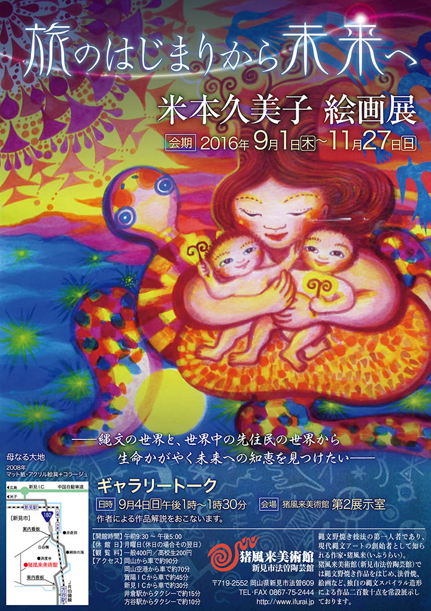
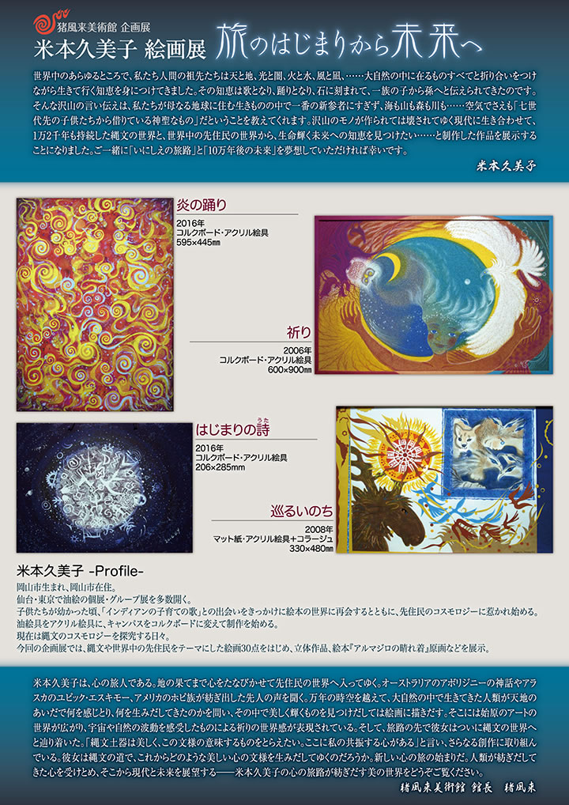

|  |
|  |
| 【米本久美子絵画展チラシ】 →PDF版を開く |
世界中のあらゆるところで、私たち人間の祖先たちは天と地、光と闇、火と水、風と凪、……大自然の中に
在るものすべてと折り合いをつけながら生きて行く知恵を身につけてきました。
その知恵は歌となり、踊りとなり、石に刻まれて、一族の子から孫へと伝えられてきたのです。
そんな沢山の言い伝えは、私たちが母なる地球に住む生きものの中で一番の新参者にすぎず、海も山も森も
川も……空気でさえも「七世代先の子供たちから借りている神聖なもの」だということを教えてくれます。
沢山のモノが作られては壊されてゆく現代に生き合わせて、1万2千年も持続した縄文の世界と、世界中の
先住民の世界から、生命輝く未来への知恵を見つけたい……と制作した作品を展示することになりました。
ご一緒に「いにしえの旅路」と「10万年後の未来」を夢想していただければ幸いです。
――米本久美子
=∴=∵=∴=∵=∴=∵=∴=∵=∴=∵=∴=∵=∴=∵=∴=∵=∴=∵=∴=∵=∴=∵=∴=∵=∴=∵=∴=
米本久美子 プロフィール
岡山市生まれ、岡山市在住。
仙台・東京で油絵の個展・グループ展を多数開く。
子供たちが幼かった頃、「インディアンの子育ての歌」との出会いをきっかけに絵本の世界に再会すると
ともに、先住民のコスモロジーに惹かれ始める。
油絵具をアクリル絵具に、キャンパスをコルクボードに変えて制作を始める。
現在は縄文のコスモロジーを探究する日々。
今回の企画展では、縄文や世界中の先住民をテーマにした絵画30点をはじめ、立体作品、絵本『アルマジロ
の晴れ着』原画などを展示。
=∴=∵=∴=∵=∴=∵=∴=∵=∴=∵=∴=∵=∴=∵=∴=∵=∴=∵=∴=∵=∴=∵=∴=∵=∴=∵=∴=
米本久美子は、心の旅人である。
地の果てまで心をたなびかせて先住民の世界へ入ってゆく。
オーストラリアのアボリジニーの神話やアラスカのユピック・エスキモー、アメリカのホピ族が紡ぎ出した
先人の声を聞く。
万年の時空を越えて、大自然の中で生きてきた人類が天地のあいだで何を感じとり、何を生みだしてきたの
かを問い、その中で美しく輝くものを見つけだしては絵画に描きだす。
そこには始原のアートの世界が広がり、宇宙や自然の波動を感受したものによる祈りの世界感が表現されて
いる。
そして、旅路の先で彼女はついに縄文の世界へと辿り着いた。
「縄文土器は美しく、この文様の意味するものをとらえたい。
ここに私の共振する心がある」と言い、さらなる創作に取り組んでいる。
彼女は縄文の道で、これからどのような美しい心の文様を生みだしてゆくのだろうか。
新しい心の旅の始まりだ。
人類が紡ぎだしてきた心を受けとめ、そこから現代と未来を展望する――米本久美子の心の旅路が紡ぎだす
美の世界をどうぞご覧ください。
――猪風来美術館 館長 猪風来